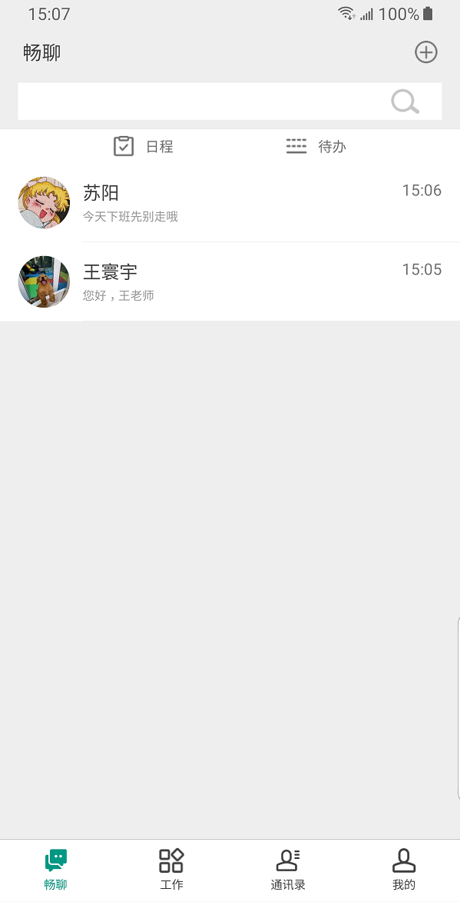

<!doctype html>

<!--

    Welcome to the light side of the source, young padawan.

    One step closer to learn something interesting you are...

                               ____                  
                            _.' :  `._               
                        .-.'`.  ;   .'`.-.           
               __      / : ___\ ;  /___ ; \      __  
             ,'_ ""=-.:__;".-.";: :".-.":__;.-="" _`,
             :' `.t""=-.. '<@.`;_  ',@:` ..-=""j.' `;
                  `:-.._J '-.-'L__ `-.-' L_..-;'     
                    "-.__ ;  .-"  "-.  : __.-"       
                        L ' /.======.\ ' J           
                         "-.   "__"   .-"            
                        __.l"-:_JL_;-";.__           
                     .-j/'.;  ;""""  / .'\"-.        
                   .' /:`. "-.:     .-" .';  `.      
                .-"  / ;  "-. "-..-" .-"  :    "-.   
             .+"-.  : :      "-.__.-"      ;-._   \  
             ; \  `.; ;                    : : "+. ; 
             :  ;   ; ;                    : ;  : \: 
             ;  :   ; :                    ;:   ;  : 
            : \  ;  :  ;                  : ;  /  :: 
            ;  ; :   ; :                  ;   :   ;: 
            :  :  ;  :  ;                : :  ;  : ; 
            ;\    :   ; :                ; ;     ; ; 
            : `."-;   :  ;              :  ;    /  ; 
             ;    -:   ; :              ;  : .-"   : 
             :\     \  :  ;            : \.-"      : 
              ;`.    \  ; :            ;.'_..-=  / ; 
              :  "-.  "-:  ;          :/."      .'  :
               \         \ :          ;/  __        :
                \       .-`.\        /t-""  ":-+.   :
                 `.  .-"    `l    __/ /`. :  ; ; \  ;
                   \   .-" .-"-.-"  .' .'j \  /   ;/ 
                    \ / .-"   /.     .'.' ;_:'    ;  
                     :-""-.`./-.'     /    `.___.'   
                           \ `t  ._  /               
                            "-.t-._:'                

-->

<!--
    
    So you'd like to know how to use impress.js?
    
    You've made the first, very important step - you're reading the source code.
    And that's how impress.js presentations are built - with HTML and CSS code.
    
    Believe me, you need quite decent HTML and CSS skills to be able to use impress.js effectively.
    More importantly, you need to be a designer. There are no default styles or layouts for impress.js presentations.
    
    You need to design and build it by hand.
    
    So...
    
    Would you still like to know how to use impress.js?
    
-->

<html lang="en">
<head>
    <meta charset="utf-8" />
    <meta name="viewport" content="width=1024" />
    <meta name="apple-mobile-web-app-capable" content="yes" />
    <title>impress.js | presentation tool based on the power of CSS3 transforms and transitions in modern browsers | by Bartek Szopka @bartaz</title>
    
    <meta name="description" content="impress.js is a presentation tool based on the power of CSS3 transforms and transitions in modern browsers and inspired by the idea behind prezi.com." />
    <meta name="author" content="Bartek Szopka" />

    <link href="//fonts.googleapis.com/css?family=Open+Sans:regular,semibold,italic,italicsemibold|PT+Sans:400,700,400italic,700italic|PT+Serif:400,700,400italic,700italic" rel="stylesheet" />

    <!--
        
        Impress.js doesn't depend on any external stylesheets. It adds all of the styles it needs for the
        presentation to work.
        
        This style below contains styles only for demo presentation. Browse it to see how impress.js
        classes are used to style presentation steps, or how to apply fallback styles, but I don't want
        you to use them directly in your presentation.
        
        Be creative, build your own. We don't really want all impress.js presentations to look the same,
        do we?
        
        When creating your own presentation get rid of this file. Start from scratch, it's fun!
        
    -->
    <link href="css/impress-demo.css" rel="stylesheet" />
    <link href="css/impress-common.css" rel="stylesheet" />
    
    <link rel="shortcut icon" href="favicon.png" />
    <link rel="apple-touch-icon" href="apple-touch-icon.png" />
</head>

<!--
    
    Body element is used by impress.js to set some useful class names, that will allow you to detect
    the support and state of the presentation in CSS or other scripts.
    
    First very useful class name is `impress-not-supported`. This class means, that browser doesn't
    support features required by impress.js, so you should apply some fallback styles in your CSS.
    It's not necessary to add it manually on this element. If the script detects that browser is not
    good enough it will add this class, but keeping it in HTML means that users without JavaScript
    will also get fallback styles.
    
    When impress.js script detects that browser supports all required features, this class name will
    be removed.
    
    The class name on body element also depends on currently active presentation step. More details about
    it can be found later, when `hint` element is being described.
    
-->
<body class="impress-not-supported">

<!--
    For example this fallback message is only visible when there is `impress-not-supported` class on body.
-->
<div class="fallback-message">
    <p>Your browser <b>doesn't support the features required</b> by impress.js, so you are presented with a simplified version of this presentation.</p>
    <p>For the best experience please use the latest <b>Chrome</b>, <b>Safari</b> or <b>Firefox</b> browser.</p>
</div>

<!--
    
    Now that's the core element used by impress.js.
    
    That's the wrapper for your presentation steps. In this element all the impress.js magic happens.
    It doesn't have to be a `<div>`. Only `id` is important here as that's how the script find it.
    
    Often you don't need to use any attributes here, but for educational purposes I have used all of them below.

    To change the duration of the transition between slides use `data-transition-duration="2000"` giving it
    a number of ms. It defaults to 1000 (1s).
    
    When authoring impress.js presentations, you should target some screen size, which you can define here.
    The default is 1024 x 768. You should write your CSS as if this is the screen size used for the
    presentation. When you present your presentation on a screen (or browser window) of different size,
    impress.js will automatically scale the presentation to fit the screen. The minimum and maximum limits
    to this scaling can also be defined here.
    
    NOTE: I intend to change the defaults to target HD screens in 2021. So you may want to make a habit
    of explicitly defining these attributes for now, to avoid any disruption when the defaults change.
    
    You can also control the perspective with `data-perspective="500"` giving it a number of pixels.
    It defaults to 1000. You can set it to 0 if you don't want any 3D effects.
    If you are willing to change this value make sure you understand how CSS perspective works:
    https://developer.mozilla.org/en/CSS/perspective
    
    Plugins:
    
    We set the default time for autoplay plugin to 7 seconds. Autoplay will automatically advance
    to next slide after a timeout expires.
-->
<div id="impress"
    data-transition-duration="1000"
    
    data-width="1024"
    data-height="768"
    data-max-scale="3"
    data-min-scale="0"
    data-perspective="1000"
    
    data-autoplay="7">

    <!--
        
        Here is where interesting thing start to happen.
        
        Each step of the presentation should be an element inside the `#impress` with a class name
        of `step`. These step elements are positioned, rotated and scaled by impress.js, and
        the 'camera' shows them on each step of the presentation.
        
        Positioning information is passed through data attributes.
        
        In the example below we only specify x and y position of the step element with `data-x="-1000"`
        and `data-y="-1500"` attributes. This means that **the center** of the element (yes, the center)
        will be positioned in point x = -1000px and y = -1500px of the presentation 'canvas'.
        
        It will not be rotated or scaled.
        
        --------
        Plugins: For first slide, set the autoplay time to a custom 10 seconds.
        
    -->
    <!-- <div id="bored" class="step slide" data-x="-1000" data-y="-1500" data-autoplay="10">
        <q>Aren’t you just <b>bored</b> with all those slides-based presentations?</q>
    </div> -->

    <!--
        
        The `id` attribute of the step element is used to identify it in the URL, but it's optional.
        If it is not defined, it will get a default value of `step-N` where N is a number of slide.
        
        So in the example below it'll be `step-2`.
        
        The hash part of the url when this step is active will be `#/step-2`.
        
        You can also use `#step-2` in a link, to point directly to this particular step.
        
        Please note, that while `#/step-2` (with slash) would also work in a link it's not recommended.
        Using classic `id`-based links like `#step-2` makes these links usable also in fallback mode.
        
    -->
    <!-- <div class="step slide" data-x="0" data-y="-1500">
        <q>Don’t you think that presentations given <strong>in modern browsers</strong> shouldn’t <strong>copy the limits</strong> of ‘classic’ slide decks?</q>
    </div>

    <div class="step slide" data-x="1000" data-y="-1500">
        <q>Would you like to <strong>impress your audience</strong> with <strong>stunning visualization</strong> of your talk?</q>
    </div> -->

    <!--
        
        This is an example of step element being scaled.
        
        Again, we use a `data-` attribute, this time it's `data-scale="4"`, so it means that this
        element will be 4 times larger than the others.
        From presentation and transitions point of view it means, that it will have to be scaled
        down (4 times) to make it back to its correct size.
        
    -->
    <div id="title" class="step" data-x="0" data-y="0" data-scale="4">
        <!-- <span class="try">then you should try</span> -->
        <h1 >移动谛听 &  MOA</h1>
        <h2> 六一联袂巨献！！！</好>
    </div>

    <!--
        
        This element introduces rotation.
        
        Notation shouldn't be a surprise. We use `data-rotate="90"` attribute, meaning that this
        element should be rotated by 90 degrees clockwise.
        
    -->
    <div id="its" class="step" data-x="850" data-y="3000" data-rotate="90" data-scale="5">
        <p>新版 <strong>MOA（综合移动办公）</strong> 
            <br/>
        <!-- inspired by the idea behind <a href="http://prezi.com">prezi.com</a> <br/>
        and based on the  -->
        <p>全新改版 全新功能</p>
        <p>办公更便捷</p>     
        <!-- in modern browsers.</p> -->
    </div>
    <!-- <div id="its-2" class="step" data-x="1850" data-y="4000" data-rotate="270" data-scale="5">
        <p> </p>
    </div> -->

    <div id="title-2"   style="font: size 60px;" class="step" data-x="2825" data-y="2325" data-z="-1000" data-rotate="90" data-scale="1">
        <p>MOA带来哪些新体验？</p>
    </div>

    <div id="jishitongxun"  width="1600px" class="step" data-x="4500" data-y="5100" data-rotate="180" data-scale="6">
        <!-- <p>visualize your <b>big</b> <span class="thoughts">thoughts</span></p> -->
        <!-- <span class="try"></span> -->
        <div style="display:inline-block; ">
            <p style="font-size: 160px;">即时</p>
            <p style="font-size: 160px;">通讯</p>
            <p style="font-size: 40px;">沟通协作 如此简单</p>
            <p style="font-size: 20px;">通讯录搜索联系人，即刻发送聊天</p> 
            <p style="font-size: 20px;">消息，支持文字、图片、表情。</p>
        </div>
        <div style="display:inline-block;">
            
        </div>
        <div style="display:inline-block;">
            
        </div>
    </div>
    <div id="itable"  width="1600px" class="step" data-x="1500" data-y="-3000" data-rotate="180" data-scale="6">
        <!-- <p>visualize your <b>big</b> <span class="thoughts">thoughts</span></p> -->
        <!-- <span class="try"></span> -->
        <div style="display:inline-block;">
            
        </div>
        <div style="display:inline-block; ">
            <p style="font-size: 80px;">iTable一键登录</p>
            <!-- <p style="font-size: 80px;"></p> -->
            <p style="font-size: 60px;">设备互联 一键登录</p>
            <p style="font-size: 25px;">扫一扫，一键登录iTable，方便快捷省键盘。</p> 
            <!-- <p style="font-size: 20px;"></p> -->
        </div>
        
    </div>

    <div id="zonghegongzuotai"  width="1600px" class="step" data-x="1500" data-y="-6500" data-z="0" data-rotate="180" data-scale="6">
        <!-- <p>visualize your <b>big</b> <span class="thoughts">thoughts</span></p> -->
        <!-- <span class="try"></span> -->
        <div style="display:inline-block; ">
            <p style="font-size: 100px;">综合工作台</p>
            <p style="font-size: 30px;">一站式工作台，集成我行各大办公平台</p>
            <p style="font-size: 40px;">覆盖全面，丰富多彩</p>
        </div>
        <div style="display:inline-block;">
            
        </div>
    </div>

    <!--
        
        And now it gets really exciting! We move into third dimension!
        
        Along with `data-x` and `data-y`, you can define the position on third (Z) axis, with
        `data-z`. In the example below we use `data-z="-3000"` meaning that element should be
        positioned far away from us (by 3000px).
        
    -->
    

    <!--
        
        This step here doesn't introduce anything new when it comes to data attributes, but you
        should notice in the demo that some words of this text are being animated.
        It's a very basic CSS transition that is applied to the elements when this step element is
        reached.
        
        At the very beginning of the presentation all step elements are given the class of `future`.
        It means that they haven't been visited yet.
        
        When the presentation moves to given step `future` is changed to `present` class name.
        That's how animation on this step works - text moves when the step has `present` class.
        
        Finally when the step is left the `present` class is removed from the element and `past`
        class is added.
        
        So basically every step element has one of three classes: `future`, `present` and `past`.
        Only one current step has the `present` class.
        
        Note: data-x/y/z attributes, if not defined, by default will inherit the value of the 
        previous step. So to get back to 0 on the z-axis, we must set it to 0.
        See src/plugins/rel/README.md for more information.
        
    -->
    <div id="ing" class="step" data-x="4000" data-y="0" data-z="0" data-rotate="90" data-scale="6">
        <p>SO，然后呢？ <br/>
            移动谛听
            <b class="positioning">他来了</b>,<b class="rotating">他来了</b>, 他携手MOA<b class="scaling">走来了！</b> </p>
    </div>

    <div id="imagination" class="step" data-x="6700" data-y="-300" data-scale="6" data-rotate="90">
        <b class="imagination">“有问题，上谛听”</b>
        <p style="font-size: 30px;">移动谛听，不单单是web端->移动端的迁移，而是一个全新的版本，全新的体验，融入了多种移动元素，新增多种移动特性，随时随地谛听，随时随地分享。</p>
    </div>
    <div id="one-more-thing" class="step" data-x="8700" data-y="0" data-scale="2">
        <div style="display:inline-block;">
            
        </div>
        <div style="display:inline-block; ">
            <p>部落</p>
            <p>短视频拍摄编辑</p>
            <p>视界</p>
            <p>微信分享</p>
            <p>友问 & 工单</p>
            <p>应用广场</p>
            <p>好友推荐</p>
        </div>
    </div>
    <div id="its-in-3d-buluo"  width="1600px" class="step" data-x="-4500" data-y="-200" data-z="0" data-rotate-x="-40" data-rotate-y="10"  data-scale="6">
        <!-- <p>visualize your <b>big</b> <span class="thoughts">thoughts</span></p> -->
        <!-- <span class="try"></span> -->
        <div style="display:inline-block; ">
            <p style="font-size: 160px;">部  落</p>
            <p style="font-size: 30px;">以“机构血缘”为依托，打造部落熟人社交</p>
            <p style="font-size: 30px;">发现身边新鲜事，此生无悔入部落</p>
        </div>
        <div style="display:inline-block;">
            
        </div>
    </div>

    <div id="duanshipin"  width="1600px" class="step" data-x="-6500" data-y="-4000" data-z="0" data-rotate-x="0" data-rotate-y="-40" data-rotate="0" data-scale="6">
        <!-- <p>visualize your <b>big</b> <span class="thoughts">thoughts</span></p> -->
        <!-- <span class="try"></span> -->
        <div style="display:inline-block;">
            
        </div>
        <div style="display:inline-block;">
            
        </div>
        <div style="display:inline-block;">
            
        </div>
        <div style="display:inline-block; ">
            <p style="font-size: 80px;">短视频拍摄编辑</p>
            <p style="font-size: 30px;">视频照片，拍摄美化</p>
            <p style="font-size: 30px;">快速发布，绚丽展示</p>
        </div>
        
    </div>

    <div id="shijie"  width="1600px" class="step" data-x="-2500" data-y="-6500" data-z="0" data-rotate="0" data-scale="6">
        <!-- <p>visualize your <b>big</b> <span class="thoughts">thoughts</span></p> -->
        <!-- <span class="try"></span> -->
        <div style="display:inline-block; ">
            <p style="font-size: 160px;">视界</p>
            <p style="font-size: 40px;">领略vlog和美图</p>
            <p style="font-size: 40px;">我用视界带你看</p>
            <p style="font-size: 40px;">不管你走到哪里</p>
            <p style="font-size: 40px;">记录生活的美艳</p>
        </div>
        <div style="display:inline-block;">
            
        </div>
    </div>

    <div id="weixin"  width="1600px" class="step" data-x="-9500" data-y="-6500" data-z="0" data-rotate="90" data-scale="6">
        <!-- <p>visualize your <b>big</b> <span class="thoughts">thoughts</span></p> -->
        <!-- <span class="try"></span> -->
        <div style="display:inline-block;">
            
        </div>
        <div style="display:inline-block;">
            
        </div>
        <div style="display:inline-block; ">
            <p style="font-size: 80px;">微信分享</p>
            <p style="font-size: 30px;">增加分享渠道，分享更便捷</p>
        </div>
    </div>

    <div id="gongdan"  width="1600px" class="step" data-x="-9500" data-y="-10500" data-z="0" data-rotate-x="0" data-rotate-y="-40" data-rotate="0" data-scale="6">
        <!-- <p>visualize your <b>big</b> <span class="thoughts">thoughts</span></p> -->
        <!-- <span class="try"></span> -->
        
        <div style="display:inline-block; ">
            <p style="font-size: 80px;">友问&工单</p>
            <p style="font-size: 20px;">抛出问题，收获智慧，华山论剑，众策众力，</p>
            <p style="font-size: 20px;">谛友在此相见恨晚</p>
            <p style="font-size: 20px;">指掌工单，随时提问，随地支持，效率惊艳，</p>
            <p style="font-size: 20px;">解锁问答全新途径</p>
            工单支持so easy！
        </div>
        <div style="display:inline-block;">
            
        </div>
        <div style="display:inline-block;">
            
        </div>
    </div>

    <div id="zixun"  width="1600px" class="step" data-x="-9500" data-y="-13500" data-z="0" data-rotate-x="0" data-rotate-y="-40" data-rotate="0" data-scale="6">
        <!-- <p>visualize your <b>big</b> <span class="thoughts">thoughts</span></p> -->
        <!-- <span class="try"></span> -->
        <div style="display:inline-block;">
            
        </div>
        <div style="display:inline-block; ">
            <p style="font-size: 160px;">资 讯</p>
            <p style="font-size: 20px;">优质前沿技术资讯，助力员工技术提升</p>
            <p style="font-size: 20px;">选取外网优质技术资讯平台，</p>
            <p style="font-size: 20px;">抓取最新前沿技术资料。</p>
            <p style="font-size: 20px;">还等什么，赶紧打开移动谛听</p>
            <p style="font-size: 20px;">利用空余时间看资讯、学技能。</p>
        </div>
    </div>

    <div id="yingyongguangchang"  width="1600px" class="step" data-x="-5000" data-y="-15000" data-z="0" data-rotate-x="-40" data-rotate-y="0" data-rotate="0" data-scale="6">
        <!-- <p>visualize your <b>big</b> <span class="thoughts">thoughts</span></p> -->
        <!-- <span class="try"></span> -->

        <div style="display:inline-block; ">
            <p style="font-size: 80px;">应用广场</p>
            <p style="font-size: 20px;">我行主流应用一应俱全</p>
            <p style="font-size: 20px;">各路大神专家坐镇在此</p>
            <p style="font-size: 20px;">工单知识为您答疑解惑</p>
            <p style="font-size: 20px;">知识库提供详细的操作手册和开发指南</p>
            <p style="font-size: 20px;">工单仓库积累了问题经验</p>
            <p style="font-size: 20px;">通过应用广场，随时随地学知识、轻松开心解bug。</p>
        </div>
        <div style="display:inline-block;">
            
        </div>
        <div style="display:inline-block;">
            
        </div>
    </div>

    <div id="haoyoutuijian"  width="1600px" class="step" data-x="-5000" data-y="-18000" data-z="-40" data-rotate-x="0" data-rotate-y="0" data-rotate="0" data-scale="6">
        <!-- <p>visualize your <b>big</b> <span class="thoughts">thoughts</span></p> -->
        <!-- <span class="try"></span> -->
        <div style="display:inline-block;">
            
        </div>
        <div style="display:inline-block;">
            
        </div>
        <div style="display:inline-block; ">
            <p style="font-size: 80px;">好友推荐</p>
            <p style="font-size: 20px;">发现通讯录好友</p>
            <p style="font-size: 20px;">关注我农大咖</p>
            <p style="font-size: 20px;">取经交流互动更方便</p>
            <p style="font-size: 20px;">通讯录好友推荐，一键关注用户</p>
            <p style="font-size: 20px;">及时了解好友的谛听动态</p>
            <p style="font-size: 20px;">发表动态@好友</p>
            <p style="font-size: 20px;">建立谛友间的线上社交圈</p>
        </div>
        
    </div>

    <!-- <div id="source" class="step" data-x="6300" data-y="2000" data-rotate="20" data-scale="4">
        <p>want to know more?</p>
        <q><a href="http://github.com/impress/impress.js">use the source</a>, Luke!</q>
    </div> -->

    <!-- <div id="one-more-thing" class="step" data-x="6000" data-y="4000" data-scale="2">
        <p>one more thing...</p>
    </div> -->

    <!--
        
        And the last one shows full power and flexibility of impress.js.
        
        You can not only position element in 3D, but also rotate it around any axis.
        So this one here will get rotated by -40 degrees (40 degrees anticlockwise) around X axis and
        10 degrees (clockwise) around Y axis.
        
        You can of course rotate it around Z axis with `data-rotate-z` - it has exactly the same effect
        as `data-rotate` (these two are basically aliases).
        
    -->
    <!-- <div id="its-in-3d" class="step" data-x="6200" data-y="4300" data-z="-100" data-rotate-x="-40" data-rotate-y="10" data-scale="2">
        <p><span class="have">have</span> <span class="you">you</span> <span class="noticed">noticed</span> <span class="its">it’s</span> <span class="in">in</span> <b>3D<sup>*</sup></b>?</p>
        <span class="footnote">* beat that, prezi ;)</span>
    </div> -->

    <!--
        
        So to summarize of all the possible attributes used to position presentation steps, we have:
        
        * `data-x`, `data-y`, `data-z` - they define the position of **the center** of step element on
            the canvas in pixels; their default value is 0;
        * `data-rotate-x`, `data-rotate-y`, 'data-rotate-z`, `data-rotate` - they define the rotation of
            the element around given axis in degrees; their default value is 0; `data-rotate` and `data-rotate-z`
            are exactly the same;
        * `data-scale` - defines the scale of step element; default value is 1
        
        These values are used by impress.js in CSS transformation functions, so for more information consult
        CSS transfrom docs: https://developer.mozilla.org/en/CSS/transform
        
    -->
    <div id="overview" class="step" data-x="3000" data-y="1500" data-z="0" data-scale="10">
    </div>

</div>

<!--
    This is a UI plugin. You can read more about plugins in src/plugins/README.md.
    For now, I'll just tell you that this adds some graphical controls to navigate the
    presentation. In the CSS file you can style them as you want. We've put them bottom right.
-->
<div id="impress-toolbar"></div>

<!--
    
    Hint is not related to impress.js in any way.
    
    But it can show you how to use impress.js features in creative way.
    
    When the presentation step is shown (selected) its element gets the class of "active" and the body element
    gets the class based on active step id `impress-on-ID` (where ID is the step's id)... It may not be
    so clear because of all these "ids" in previous sentence, so for example when the first step (the one with
    the id of `bored`) is active, body element gets a class of `impress-on-bored`.
    
    This class is used by this hint below. Check CSS file to see how it's shown with delayed CSS animation when
    the first step of presentation is visible for a couple of seconds.
    
    ...
    
    And when it comes to this piece of JavaScript below ... kids, don't do this at home ;)
    It's just a quick and dirty workaround to get different hint text for touch devices.
    In a real world it should be at least placed in separate JS file ... and the touch content should be
    probably just hidden somewhere in HTML - not hard-coded in the script.
    
    Just sayin' ;)
    
-->
<div class="hint">
    <p>Use a spacebar or arrow keys to navigate. <br/>
       Press 'P' to launch speaker console.</p>
</div>
<script>
if ("ontouchstart" in document.documentElement) { 
    document.querySelector(".hint").innerHTML = "<p>Swipe left or right to navigate</p>";
}
</script>

<!--
    
    Last, but not least.
    
    To make all described above really work, you need to include impress.js in the page.
    I strongly encourage to minify it first.
    
    In here I just include full source of the script to make it more readable.
    
    You also need to call a `impress().init()` function to initialize impress.js presentation.
    And you should do it in the end of your document. Not only because it's a good practice, but also
    because it should be done when the whole document is ready.
    Of course you can wrap it in any kind of "DOM ready" event, but I was too lazy to do so ;)
    
-->
<script src="js/impress.js"></script>
<script>impress().init();</script>

<!--
    
    The `impress()` function also gives you access to the API that controls the presentation.
    
    Just store the result of the call:
    
        var api = impress();
    
    and you will get three functions you can call:
    
        `api.init()` - initializes the presentation,
        `api.next()` - moves to next step of the presentation,
        `api.prev()` - moves to previous step of the presentation,
        `api.goto( stepIndex | stepElementId | stepElement, [duration] )` - moves the presentation to the step given by its index number
                id or the DOM element; second parameter can be used to define duration of the transition in ms,
                but it's optional - if not provided default transition duration for the presentation will be used.
    
    You can also simply call `impress()` again to get the API, so `impress().next()` is also allowed.
    Don't worry, it wont initialize the presentation again.
    
    For some example uses of this API check the last part of the source of impress.js where the API
    is used in event handlers.
    
-->

</body>
</html>

<!--
    
    Now you know more or less everything you need to build your first impress.js presentation, but before
    you start...
    
    Oh, you've already cloned the code from GitHub?
    
    You have it open in text editor?
    
    Stop right there!
    
    That's not how you create awesome presentations. This is only a code. Implementation of the idea that
    first needs to grow in your mind.
    
    So if you want to build great presentation take a pencil and piece of paper. And turn off the computer.
    
    Sketch, draw and write. Brainstorm your ideas on a paper. Try to build a mind-map of what you'd like
    to present. It will get you closer and closer to the layout you'll build later with impress.js.
    
    Get back to the code only when you have your presentation ready on a paper. It doesn't make sense to do
    it earlier, because you'll only waste your time fighting with positioning of useless points.
    
    If you think I'm crazy, please put your hands on a book called "Presentation Zen". It's all about 
    creating awesome and engaging presentations.
    
    Think about it. 'Cause impress.js may not help you, if you have nothing interesting to say.
    
-->

<!--
    
    Are you still reading this?
    
    For real?
    
    I'm impressed! Feel free to let me know that you got that far (I'm @bartaz on Twitter), 'cause I'd like
    to congratulate you personally :)
    
    But you don't have to do it now. Take my advice and take some time off. Make yourself a cup of coffee, tea,
    or anything you like to drink. And raise a glass for me ;)
    
    Cheers!
    
-->

